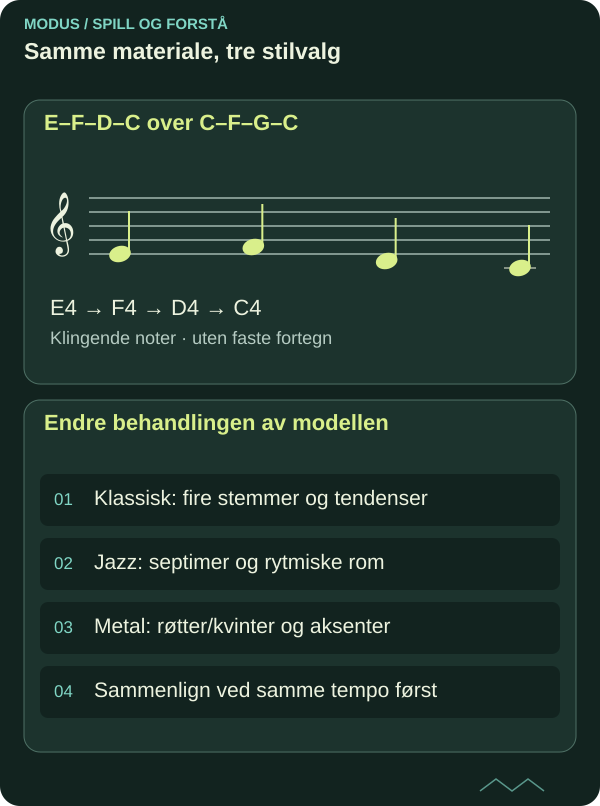

Stilforståelse: sammenlign klassisk sats, jazz og metal
Samme toneforbindelse kan ha ulik funksjon i forskjellige stiler. Bruk lytting og presise avgrensninger til å skille analyse fra smak.
DETTE LÆRER DU
Stilforståelse: sammenlign klassisk sats, jazz og metal
- Sammenligne stiltrekk uten å gjøre én norm universell.
- Overføre et musikalsk prinsipp til egen gitar-/pianoskisse.

Velg en konkret sammenligning
Velg tre korte lovlig tilgjengelige utdrag: en klassisk frase, et jazzutdrag og et instrumentalmetalriff. Oppgi verk, utøver, innspilling og tidskode i arbeidsjournalen. Spør hvordan hver musikk organiserer avslutning, puls og stemmeforhold.
Skill historisk opplysning fra egen tolkning. En observasjon om en bestemt innspilling kan ikke automatisk generaliseres til all musikk i en sjanger. Bruk primære lydkilder og relevante noter når du kan, og oppgi usikkerhet ved transkripsjon.

Les diagrammet som tekst
- E–F–D–C over C–F–G–C: E4 → F4 → D4 → C4
- Endre behandlingen av modellen: Klassisk: fire stemmer og tendenser; Jazz: septimer og rytmiske rom; Metal: røtter/kvinter og aksenter; Sammenlign ved samme tempo først
Tre behandlinger av ett materiale
Bruk C–F–G–C og melodien E–F–D–C som egen modell. Lag en rolig firestemmig sats med kontrollerte tendensoppløsninger, et jazzkomp med septimer og rytmiske mellomrom, og et riff med grunntoner/kvinter og tydelige aksenter.
Den klassiske modellen kan vurdere uønskede kvintparalleller, mens riffet kan bruke parallelle powerchorder som hovedklang. Forskjellen er et stilvalg som må høres i kontekst. Det betyr ikke at den ene versjonen mangler regler eller at alle satsteknikker er like virksomme.
Piano og gitar som sammenligningsverktøy
Spill alle tre som enkle pianoreduksjoner. Da kan du sammenligne bass og melodisk retning uten at produksjonsklangen avgjør alt. Spill dem deretter på gitar med tilpasset artikulasjon: legato, korte kompanslag og dempet riff.
Behold tempoet i en første runde. I neste kan du tilpasse tempo og groove til den valgte stilen. Noter hvilke endringer som gjør størst forskjell: metrisk plassering, voicing, tonevarighet eller klang. Slik blir stilforståelse en konkret undersøkelse framfor en liste med sjangerord.
Historie og egen identitet
Les en pålitelig historisk kilde om ett av utdragene og skill dokumentert kontekst fra det du selv hører. Unngå å beskrive en hel tradisjon med ett følelsesord. Spør heller hvordan bestemte praksiser har formet akkurat dette materialet.
Lever en kort sammenlignende analyse med takter eller tidskoder og én egen hybridversjon. Oppgi hva du har hentet som prinsipp, uten å kopiere et beskyttet motiv. Studieplanens tverrgående historikk- og samspillkrav trenger videre spesifiserte mål; denne artikkelen gir et arbeidsforløp, ikke en formell lukking av dem.
Kildegrunnlag og faglig status
Original norsk MODUS-tekst med egne undervisningseksempler. Faglig referansegrunnlag for videre kontroll:
Under arbeid – ikke faglig sluttgodkjent. Artikkelen dokumenterer ingen personlig mestring og gir ingen formell studie- eller publiseringsgodkjenning. Skriftlig forklaring, faktisk spill og lytting må vurderes hver for seg.
FRA LESING TIL SPILLING
Prøv det selv.
Analyser tre korte utdrag og lag tre egne stilvarianter av samme materiale. Lever lyd, kilder og en refleksjon om hva du faktisk endrer på gitar og piano.
- Gjør et selvstendig første forsøk før du ser quizfasiten.
- Spill den konkrete modellen på gitar og piano, og lytt til forskjellen.
- Lag en ny variant og behold første og bearbeidede versjon separat.
SJEKK FORSTÅELSEN
Hva sitter igjen?
Tre spørsmål om det du har lest. Alle tre riktige gir fullført quiz. Du kan prøve så mange ganger du vil.
Fullføring lagres i denne nettleseren og deles mellom norsk og engelsk.
Du har svart riktig på alle tre spørsmålene. Ta ideen med til instrumentet.
Til artikkelbiblioteket ↗︎ANBEFALT NESTE STEG
Auditiv kontroll: hør intervall og funksjon uten synlig fasit
Neste del av den foreslåtte faglige ruten. Velg emner ut fra forkunnskap og behov.
Auditiv kontroll: hør intervall og funksjon uten synlig fasit ↗︎